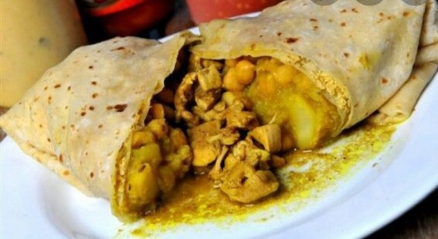

Roti

Description
Trini Roti or Wrap roti, often referred to as a roti, is a popular food in
the Caribbean, and consists of curried or stewed meat and or vegetables
folded tightly within a dhal puri or paratha roti. The items placed inside
of a wrapped roti are commonly called tarkari in Trinidad and Tobago.
Popular items that are eaten in a wrap roti are curried chicken, curried
duck, curried potatoes, pumpkin, and stewed chicken.
Roti is eaten widely across the Caribbean, especially in countries with
large Indo-Caribbean populations like Trinidad and Tobago.
Ingredients
- 5 cups flour
- 4 cups boiling water
- 1 lb beef
- 1 teaspoon ginger
- 1 teaspoon garlic
- 1⁄3 cup onion
- 1 teaspoon salt
- 1 1⁄2 tablespoons curry powder
- 1 teaspoon oil
- 2 potatoes
Steps
-
Pour the boiling water over the flour. Use a big spoon for mixing as
dough will be really hot. Mix until smooth so it will be easy to roll
out (like a pie shell); grease frypan before frying.
-
Make them the size of taco shells. Also oil both sides of roti and fry.
-
Keep it warm in a covered pan or bowl while frying the remaining roti.
- Serve with curry.
-
Heat the oil first. Fry the ginger, garlic and the onion until brown.
- Add the salt and curry powder.
- Stir for about 2 minutes.
- Add small cubes of beef and let it cook until the beef is tender.
- Then add potato cubes.
- If the meat is kind of dry, add a little water.
- Also the meat and potatoes will cook better.
-
When curry mixture is done, put some in each roti shell (something like
tacos) and wrap the roti shell around the curry mixture (like a
package).